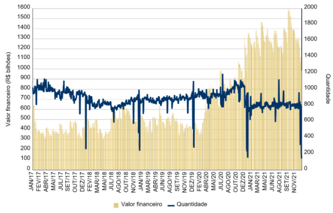

Taxas
Cálculo da taxa Selic
A taxa Selic é o indicador de referência para a taxa básica de juros doméstica, e é utilizada como referencial para sinalização das ações de política monetária. Ela representa a média ponderada pelo volume financeiro das taxas de juros praticadas em operações compromissadas de prazo de um dia útil que têm por objeto os títulos públicos federais custodiados no Selic. O gráfico a seguir38 mostra a evolução do valor financeiro e a quantidade de operações consideradas no cálculo da taxa Selic no ano de 2021.
Gráfico 6.1.1 – Valor financeiro e quantidade de operações consideradas no cálculo da taxa Selic
Em 2021, no cálculo diário da taxa Selic, foram consideradas, em média, 793 operações, cujo valor financeiro médio total correspondeu a R$ 1,3 trilhão. O valor financeiro mais alto foi de R$ 1,6 trilhão, enquanto o mais baixo atingiu R$ 980,7 bilhões. Os dias com menor volume de negociação em número de operações ocorreram em 30/12 e 31/12, com 201 e 142 operações, respectivamente. Já os dias com menor volume financeiro foram 30/12 e 31/12. Destaca-se que, mesmo nesses dias, não houve necessidade de emprego de fallback para o cálculo da taxa Selic39.
38. Valor financeiro e quantidade referente às operações compromissadas consideradas no cálculo da taxaSelic. Valores totais apurados a cada dia útil.39. Nos termos da Resolução BCB nº 46, de 24 de novembro de 2020, o fallback ocorre quando a base de cálculode determinado dia não puder ser determinada, inclusive em virtude de ausência de dados, ou do somatório dos valores financeiros das recompras e revendas das operações compromissadas que a compõem ser inferior a 50% da correspondente média aritmética simples apurada nos cinco dias úteis anteriores. Neste caso, a Taxa Selic é igual à meta para a Taxa Selic acrescida da diferença residual, que corresponde à média aritmética simples da diferença, apurada nos cinco dias úteis anteriores ao de referência, entre a Taxa Selic efetiva e a respectiva meta.